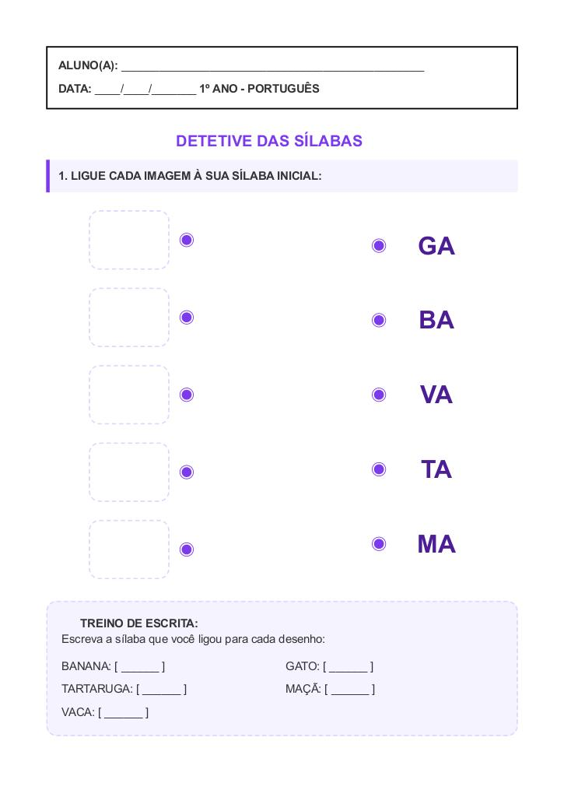

← Voltar ao Portal
ALUNO(A):
________________________________________________
DATA:
____/____/_______
1º ANO - PORTUGUÊS
1. LIGUE CADA IMAGEM À SUA SÍLABA INICIAL:
🍌
🐱
🐢
🍎
🐄
GA
BA
VA
TA
MA
📝 TREINO DE ESCRITA:
Escreva a sílaba que você ligou para cada desenho:
BANANA: [ ______ ]
GATO: [ ______ ]
TARTARUGA: [ ______ ]
MAÇÃ: [ ______ ]
VACA: [ ______ ]
Visualização da Folha de Atividade
